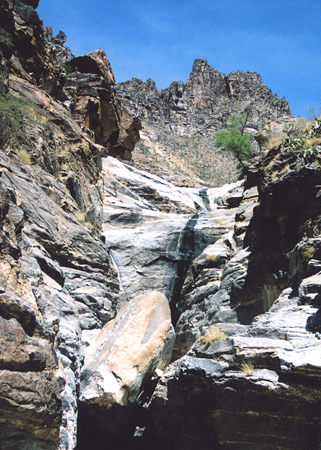

Bear Canyon is less visited than Sabino Canyon, especially in the 100°F heat of summer when its stream dries up completely and hiking the rocky trail can be quite strenuous. The usual trailhead is 1.7 miles from the Sabino Canyon parking area along a paved road, so reachable by a brisk half hour walk or a slow, bumpy, 10 minute ride on the tram (which leaves on the hour, starting at 9 am). The tram stops at several other places, allowing for various shorter hikes along the way. Rest rooms and a supply of drinking water are located at road's end.
The Bear Canyon trail (#29) actually starts from the visitor center, crossing undulating, bushy land for 1.7 miles, though most people join at the end of the side road, from where the path descends the side of the ravine, passing a second source of drinking water, then heads along the canyon floor crossing the streambed a few times though generally following just above. The trail is stony, mostly level, and not particularly difficult, except at the rare times of high water flow when some of the seven creek crossings can be a bit tricky. There is some shade along the way provided by groups of cottonwood trees but most of the route is fully exposed to the sun. The canyon sides are steep and jagged, formed of broken metamorphic rocks, and bearing many desert plants, most prominently ocotillo, saguaro, cholla, prickly pear, western coral bean and palo verde - yet the land is quite sparsely vegetated apart from the edges of the wash which are lined with bushes and trees.
After 1.5 miles, the path starts to climb quite high above the streamway on the south side, to avoid an entrenched section containing several dryfalls and narrow channels. It forks half a mile further; the main (right) branch continues climbing steadily, curving around a side ravine and up Bear Canyon for 3 more miles to a junction with other paths in the Coronado National Forest. The left fork is a spur path that descends to a rock plateau at the base of the Seven Falls, the most photogenic feature in the canyon, where it gains 200 feet in elevation via a series of water-polished chutes and terraces. When flowing (usually from October to May), the stream forms many pools and cascades, plus the seven main waterfalls; some of the largest pools are deep enough for swimming. The exposed granitic rocks are quite pretty - grey to white in color, crossed by mineral veins, and slippery when wet. There is no official trail to the higher falls though climbing up is quite possible, on the right side of the stream, past some spots that need a degree of caution. Above the falls, the canyon bends back to the east and the terrain becomes more level, though still pretty, as the creek flows slowly through pools and rocky channels. The round trip to the top of the falls and back takes from 2.5 hours.
Source: "Sabino Canyon, Bear Canyon- Seven Falls Tucson, Arizona"